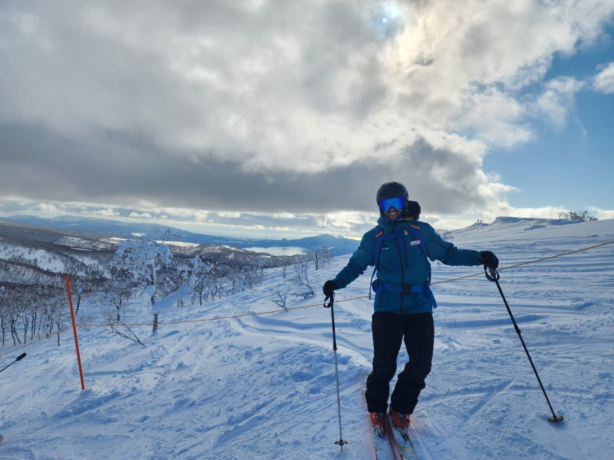
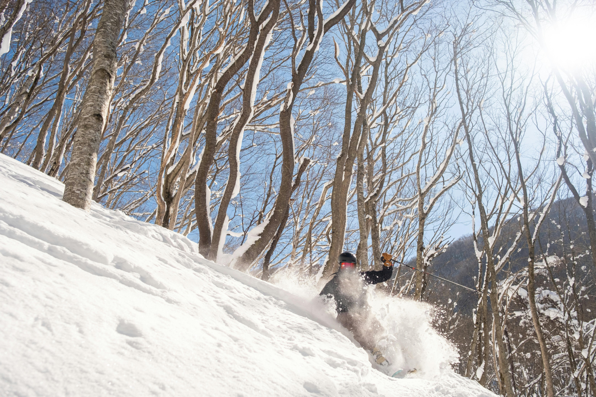
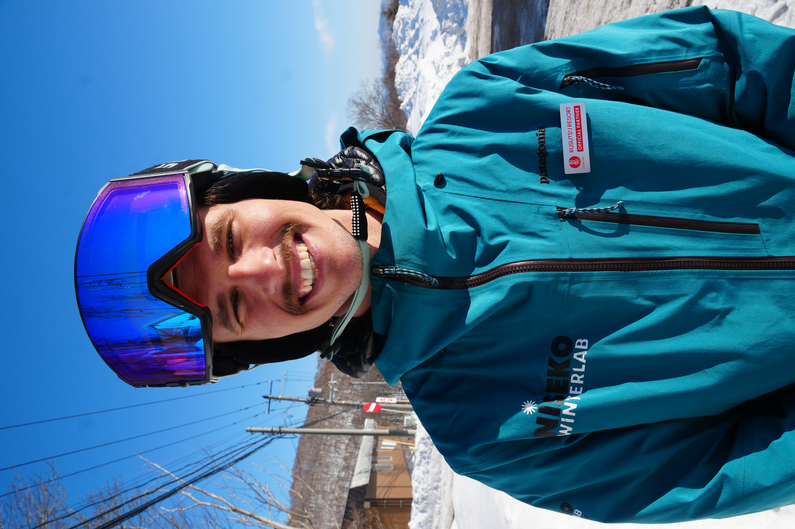

NISEKO • RUSUTSU • HOKKAIDO
More than one mountain.
More than one way to ski.
Niseko is an incredible base for exploring Hokkaido, but the best ski day isn't always about staying in one place.
From Niseko's four distinct resort areas and extensive sidecountry to the playful tree skiing of Rusutsu and the many mountains beyond, Hokkaido offers an enormous variety of terrain, snow and experiences.
01 / NISEKO
Four resorts.
Endless possibilities.
Niseko offers a remarkable variety of skiing, with four distinct resort areas, each with its own character, terrain and resources.
Beyond the groomed runs, the sidecountry and backcountry terrain opens up another dimension to the mountain. Access is managed through designated gates, with Ski Patrol controlling openings according to conditions.
But once through the gates, the responsibility doesn't end there. The terrain can become complex quickly, and knowing where to go, how to navigate it and how to adapt to the conditions is an important part of the experience.
For me, Niseko is also about everything around the skiing. Traditional Japanese restaurants, international food, the atmosphere of the village and the opportunity to experience Japanese culture make it much more than a ski destination.

02 / RUSUTSU
Playful skiing,
just beyond Niseko.
Only around 20 minutes from Niseko, Rusutsu offers a completely different experience.
It's particularly known for its extensive tree skiing, where the terrain can be playful, varied and incredibly fun to explore. It also tends to feel less crowded than Niseko, giving you more space to enjoy the mountain.
The resort is divided into East and West areas, with the West side offering terrain that is particularly suited to beginners and families, while other parts of the resort provide plenty for more experienced skiers.
For skiers who enjoy trees, natural terrain and exploring a mountain rather than simply following the piste map, Rusutsu can be a fantastic alternative to a day in Niseko.

03 / HOKKAIDO
There's a lot
more to discover.
Hokkaido has around 100 ski resorts and countless mountains and areas to explore.
But the island is about much more than skiing. Its food, landscapes, culture and winter atmosphere are all part of what makes a trip here special.
The region's famous snow is created by cold air moving across the Sea of Japan from Siberia, picking up moisture before delivering the dry winter snowfall Hokkaido is known for.
For anyone who loves mountains and snow, Hokkaido is an experience worth making the journey for.
And if you're visiting during winter, you may even combine your skiing with one of Japan's most famous winter events: the Sapporo Snow Festival.
Combine Hokkaido, its snow and an experienced local guide, and you have the ingredients for a very special ski holiday.
THE RIGHT MOUNTAIN FOR THE DAY
Where should you ski?
It depends on you — and the mountain.
There isn't one perfect mountain for every skier or every day. Snowfall, visibility, wind, terrain, crowds and your own goals can all change where it makes sense to ski.
That's where local knowledge matters.
I'll help you decide where to go based on the conditions, your skiing and what you want from the day — whether that's improving your technique, finding powder, exploring off-piste terrain or simply discovering somewhere new.
Plan Your Ski DayNISEKO • HOKKAIDO • JAPAN
Not sure where
you should ski?
Tell me what you're looking for and we'll work out the right mountain and the right experience for you.
Get in Touch